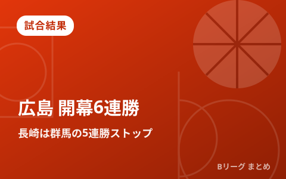

広島がトリプルOTで開幕6連勝 長崎は群馬の5連勝ストップ 千葉Jは連敗脱出

10月10日、りそなB.LEAGUE PREMIER(Bプレミア)は7試合が行われました。広島サンプラザホールでは、広島ドラゴンフライズが滋賀レイクスターズとの延長3回に及ぶ激闘を111-105で制し、開幕から負けなしの6連勝としました。一方、昨季チャンピオンシップ王者の長崎ヴェルカは群馬クレインサンダーズを70-59で下し、群馬の開幕5連勝にストップをかけています。敵地レバンガ北海道と対戦した千葉ジェッツは109-103で勝利し、開幕戦以来5試合ぶりの白星を手にしました。
広島、延長3回の激闘を制して開幕6連勝
広島ドラゴンフライズと滋賀レイクスターズの対戦は、4クォーターで決着がつかず延長を3回重ねる大接戦となりました。3度目の延長残り2分16秒から、コフィ・コーバーンと寺嶋良が連続で得点してリードを広げ、111-105で広島が勝利。終盤に逆転のゴールを決めた寺嶋良の活躍もあり、広島はこれで開幕から負けなしの6連勝となりました。敗れた滋賀は2勝4敗です。
| 対戦 | スコア |
|---|---|
| 広島ドラゴンフライズ ○ － ● 滋賀レイクスターズ（延長3回） | 111－105 |
長崎が群馬の開幕5連勝をストップ、千葉Jは5試合ぶりの白星
昨季チャンピオンシップを制した長崎ヴェルカは、ホームで群馬クレインサンダーズと対戦し70-59で勝利。これにより群馬の開幕5連勝にストップをかけました。長崎は開幕から苦しいスタートでしたが、8日の信州ブレイブウォリアーズ戦（74-71）で馬場雄大が27得点と活躍して今季初勝利を挙げたのに続き、この試合で連勝としています。
敵地でレバンガ北海道と対戦した千葉ジェッツは、終盤に追い上げて109-103で勝利し、開幕戦以来となる5試合ぶりの白星を挙げました。北海道は前半、3ポイントシュートを織り交ぜた攻撃で55-62とリードしていましたが、終盤に失速。チーム最多26得点を挙げた富永啓生の奮闘も届きませんでした。北海道のロイブルヘッドコーチは試合後、「オフェンスでは103点を取れたが、特に出だしの30分間のディフェンスが弱すぎた」と振り返っています。
| 対戦 | スコア |
|---|---|
| 長崎ヴェルカ ○ － ● 群馬クレインサンダーズ | 70－59 |
| レバンガ北海道 ● － ○ 千葉ジェッツ | 103－109 |
その他の試合 A東京が5勝目、琉球はホーム開幕戦で初勝利
川崎ブレイブサンダースとのアウェー戦に臨んだアルバルク東京は、序盤こそ接戦となったものの第3クォーターで突き放し94-82で勝利。キヨンテ・ジョンソンを中心に5選手が二桁得点をマークし、開幕5勝目を挙げました。沖縄アリーナでは琉球ゴールデンキングスが今季のホーム開幕戦で島根スサノオマジックを90-69で下し、ホームでの初勝利を飾っています。この日は三遠ネオフェニックスが信州ブレイブウォリアーズを83-81、佐賀バルーナーズが神戸ストークスを84-77で下しました。
| 対戦 | スコア |
|---|---|
| 川崎ブレイブサンダース ● － ○ アルバルク東京 | 82－94 |
| 琉球ゴールデンキングス ○ － ● 島根スサノオマジック | 90－69 |
| 三遠ネオフェニックス ○ － ● 信州ブレイブウォリアーズ | 83－81 |
| 佐賀バルーナーズ ○ － ● 神戸ストークス | 84－77 |
Q. 「ハピネッツアリーナ」ではなく今回の長崎戦は？
A. 本記事の会場名は各クラブ・報道の表記を優先し、不確実な会場名は記載を省いています。正式な試合会場は各クラブ公式サイトでご確認ください。
出典：中国新聞「ドラフラ、滋賀に競り勝ち6連勝」／デイリースポーツ「Ｂリーグ、広島が開幕６連勝」／毎日新聞「レバンガ北海道、終盤粘りも千葉ジェッツに敗北」（Yahoo!ニュース）／アルバルク東京公式「10/10(土) 川崎ブレイブサンダース戦 ゲームレポート」／DAZN News「【Bプレミア結果まとめ】千葉Jが北海道を下して連敗脱出…トリプルオーバータイムを制した広島は6連勝」ほか
https://www.chugoku-np.co.jp/articles/-/907868
https://www.daily.co.jp/general/2026/10/10/0020915262.shtml
https://news.yahoo.co.jp/articles/883902b68c0e94a9dd52cdd674ea431c0b6569be
https://www.alvark-tokyo.jp/news/detail/team/id=261010